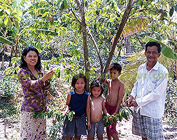
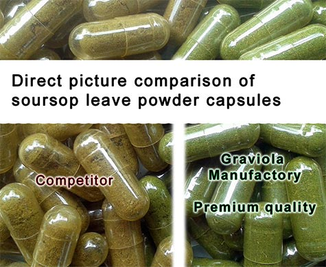

Premium-quality Soursop
For the premium-quality products from the Graviola Manufactory, only hand-sorted leaves from
small-scale farms are used - grown without any chemical pesticides or fertilizers.
Valuable craftsmanship
To ensure the highest quality, the leaves are hand sorted twice. First, freshly after harvest
band second, after drying and before packaging. Each kilo of the dried leaves requires around
15 hours manual labor.
Whole graviola leaves, 100% natural
The smaller the cut of the leaves is, the better poor quality may be covered up. For this reason
we always sell the leaves whole, in their natural state, gently dried, alongside the further
processed products.

To ensure the highest quality, the leaves are hand sorted twice. First, freshly after harvest
band second, after drying and before packaging. Each kilo of the dried leaves requires around
15 hours manual labor.
Whole graviola leaves, 100% natural
The smaller the cut of the leaves is, the better poor quality may be covered up. For this reason
we always sell the leaves whole, in their natural state, gently dried, alongside the further
processed products.
Organic certification
Organic certifications are complex and costly. They simply aren't wothwile for small-scale farmers
as the certification would cost as much as the farmer earns in a whole year. That's not fair,
but unfortunately it is the reality.
Of course, the Graviola Manufactory premium quality products are grown without any artificial
pesticides and fertilizers. Not certified, but guaranteed!
For this reason our partners from the Graviola Manufactory are locally present and are at the
farmer's side to help.

In our capsules we allow only the best quality!
Of course, for our capsules we only use hand-sorted premium-quality ingredients from the
Graviola Manufactory.
Guaranteed to be without any additives like fillers, colorants, or similar ingredients,
which have nothing to do with a good-quality natural product.
Just 100% nature and 100%pure Graviola.
The leaves are carefully processed into powder to preserve all active ingredients and the very
finely ground powder provides the best bioavailability.The production takes place in Germany.
For capsule casing we use high-grade cellulose-capsules that are, in contrast to the gelatin
versions, suitable for a vegan diet.
In our capsules we allow only the best quality!
Of course, for our capsules we only use hand-sorted premium-quality ingredients from the
Graviola Manufactory.
Guaranteed to be without any additives like fillers, colorants, or similar ingredients,
which have nothing to do with a good-quality natural product.
Just 100% nature and 100%pure Graviola.
The leaves are carefully processed into powder to preserve all active ingredients and the very
finely ground powder provides the best bioavailability.The production takes place in Germany.
For capsule casing we use high-grade cellulose-capsules that are, in contrast to the gelatin
versions, suitable for a vegan diet.
The high quality of our capsules can be recognised in their colouring. A reduced chlorophyll content
produces a brownish appearance of the leaves and powder which indicates low-grade quality, ingredients
beeing stored for too long, and/or poor processing.
Certainly it could be cheaper instead of better
However, our experience has taught us that high-grade quality products have a much better flavour,
a much higher content of important micronutrients and thus are significantly more effective.
Top-quality doesn't appear from nowhere. The manufacturing process is time-consuming and expensive,
whereas cheap products are generally mass produced and processed without great care. - Powder is
often mixed with cheaper materials of similar appearance. Leaves are dried outside without any
protection, while invaluable ingredients leak out due to exposure to ultraviolet light and rain.
Allegedly pure juice is diluted with water. - Of course, these are just some examples of how NOT
to do it. In the best case scenarios, those products just do not work and only harm a once-valuable
plant, diminishing its reputation because users experience poor or even no results with those cheap
products.
For these reasons we emphasize to our utmost our top-grade quality products, that live up to their
promises. This is what our customers can count on!
Our partner company for soursop leaves: The Graviola Manufactory
Graviola Manufactory is a German-led company based in Cambodia, producing the highest quality soursop ingredients.
Learn more about the processing of the valuable leaves on our supplier's website:
http://www.graviola-manufaktur.com.